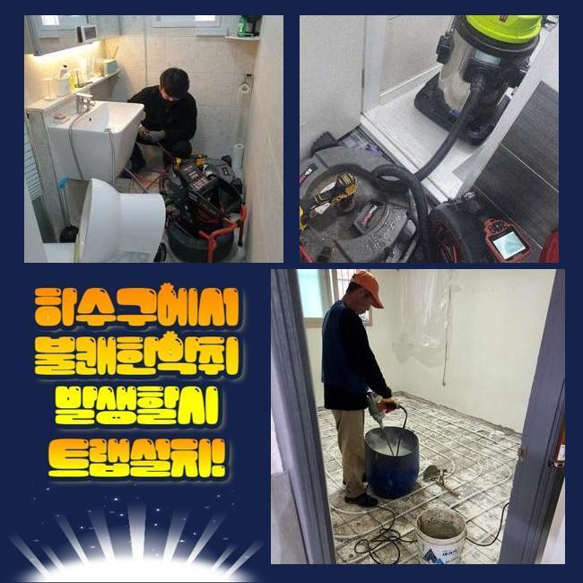
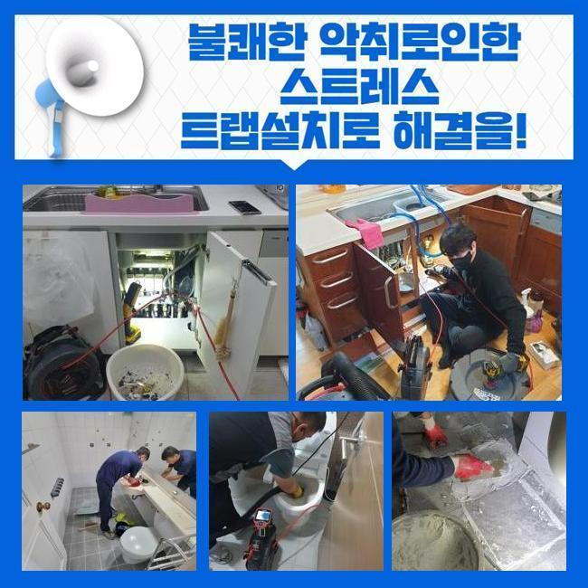
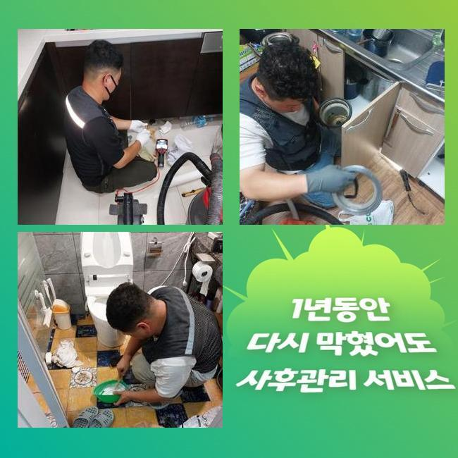
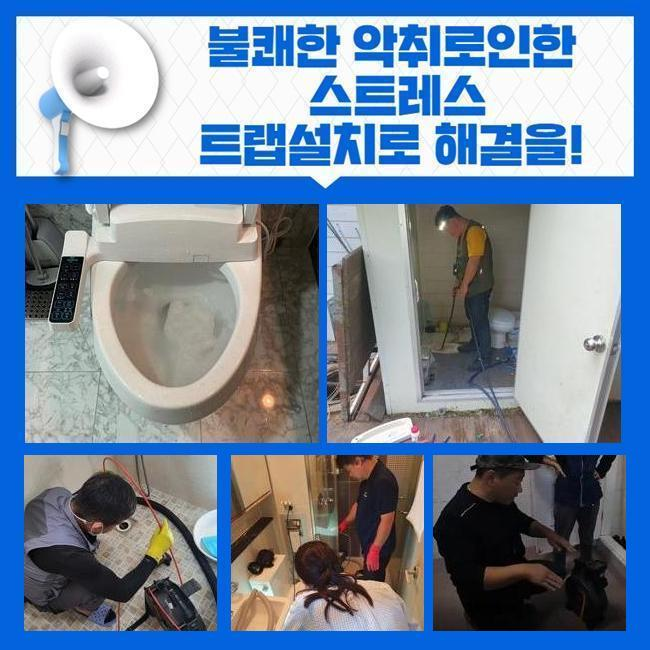
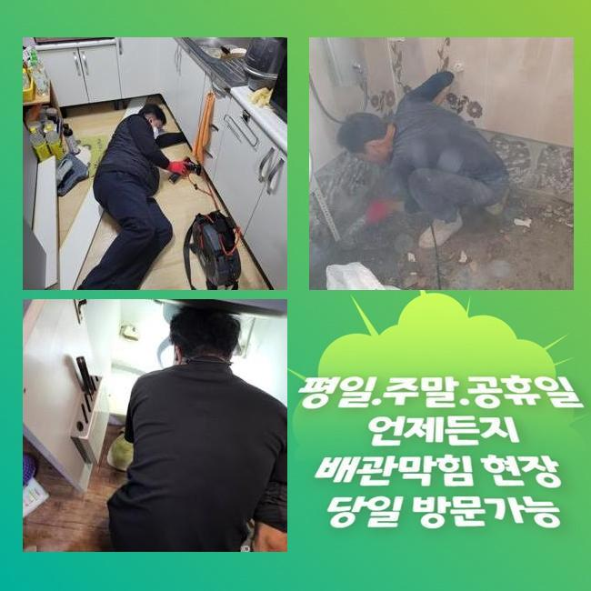
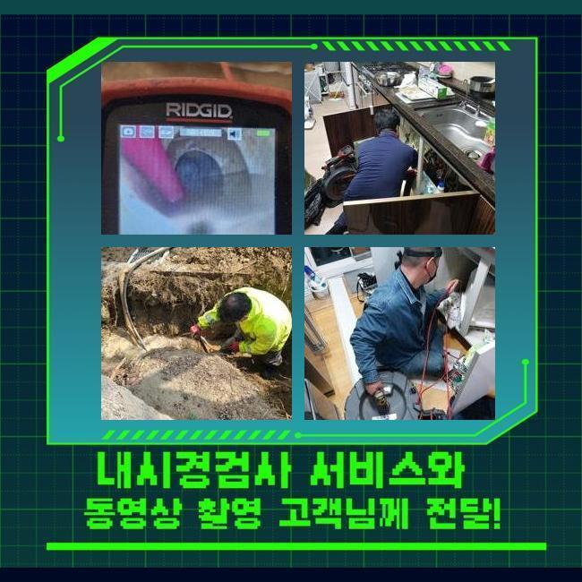

🏠 완주군 부안군 하수관막힘 광주 배관내시경카메라 설비
광주 배관막힘 전문 시공 후기

📋 작업 개요
- 위치: 광주
- 서비스 유형: 배관막힘, 누수수리, 역류해결, 배관청소, 고압세척, 설비공사, 배관보수, 악취차단
- 작업 일시: 2024. 11. 15. 8:45
- 업체명: 하수구수사대 (010-5615-2118)
🔍 문제 상황
완주군 부안군 하수관막힘 광주 배관내시경카메라 설비
배관이 막혀 고생하셨던 적이 한번 정도는 있었으리라 짐작을 내릴수가 있겠는데요
금번에 말씀해드리는 사안을 살펴보시면 분명 도움될거에요
저희들은 지난주에 화장실 물막힘으로 전화주신 의뢰인의 불편을 정리해드리고 왔는데요
고객께서는 욕실 배수공에 잔류하는 오수가 기다려도 내려가지않아 일상에 불편함이 가속되셨는데 저희팀이 이동하여 배관을 정확하게 관측하고 원인증상을 알아냈죠
그리고 그것들을 빠르게 제거해 문의자분이 화장실을 예전처럼 편하게 이용하시도록 도움을 드렸어요
그것에 더하여 의뢰인분에게 사용요령과 주의사항을 알려드려 추후 출몰하기 쉬운 배관 고장을 예방토록 도움을 드렸어요
피트랩은 관 내부에서 수도가 적절히 흐르는걸 억제하여 파이프정체를 일으키기도 합니다
또 역류까지 출몰하기 쉬운 경우 물차단이 원만하게 이루어지지 않아 추가적인 장애가 표출되기도 합니다
P형 트랩의 경우 청결하게 설비를 유지하는데는 좋지만 잔재들이 쌓이고 막힘을 유발하는 단점 또한 있어요
그렇기에 피트랩을 사용하신다면 고객님의 유지보수가 필요해요
누증된 이물을 치우고 피트랩을 확인한 뒤에 적기에 관련된 청소를 진행하여 관로가 적절하게 기능하도록 조치해야 돼요
그렇지 않으면 배수관이 지속적으로 차단되어 심중한 장애가 발생 가능한 수 있어요
그렇기에 꾸준한 검사와 세정이 요망됩니다

🔎 원인 분석
💡 전문가 진단: 정밀 진단 장비를 사용하여 슬러지의 고착 여부를 판명하고 타격/세척 작업을 실시했습니다.
먼저 배관트러블을 처리하려 아랫집으로 이동하여 점검구 뚜껑을 열어보았어요
오물들이 튀어서 근방이 오손 안되도록 보양지를 펼쳐서 시공을 하였습니다
청소를 하기 전 주민들과의 분쟁을 방지하는 사전조율을 하는게 좋아요
안 그러면 수선이 지체되거나 심해지면 시공을 멈춰야 할수도 있죠
우리들은 이에 관한 대처법을 체화하고 있기 때문에 원만하게 응대해드리고 있죠
해당 조치들을 기반하여 여유롭게 공사를 시행했고 배관고장을 정리해낼수 있었죠
해당하는 과정들을 발판삼아 차후에 비등한 사태가 출몰하기 쉬운 경우에는 여유롭게 반응하여 행동할수가 있을거에요
하수관이 막혔다면 화학용품을 써보거나 집안의 도구를 통해서 처리하실수도 있겠으나 혹여나 그것으로도 복구가 무망하다면 전문가의 조력을 받아보시는게 바람직해요
우리들은 최첨단 장비들과 기술력으로 침착하게 문제들을 정리해 드린답니다
최근 이와 연계된 기술자들이 많기에 결정에 까다로움이 있을수가 있는데요
그리고 확실치않은 인원들도 제법 있다고 알고있는 상황입니다
이러한 사람들이 찾아오면 골치아픈 트러블을 마주했을때 포기해버리거나 건성으로 덮어버리고 귀가하기도 합니다
우리팀은 이와 달리 끝까지 책임지고 공사를 마무리한다는걸 알립니다
거기에 더해 손님분의 추가적인 요청에도 빨리 응대하여 장애를 정리해 드려요

🔧 작업 과정
지연된다면 문제는 더 심화되기 때문이에요
관로가 차단되면 수분이 올라오거나 다른 곳으로 새나갈수도 있어요
해당 사태땐 재빠르게 대응해야 돼요
안으로 진입해서 형국을 파악하니 계속적으로 물방울이 방출되고 있었습니다
슬러지가 고착화되어 나타나는 문제이기도 하며 간혹 부속품에 고장이 일어났을때도 있죠
그러므로 처리하려면 근원 지점을 파악하는 것이 중요하죠
금번엔 슬러지 소제만으론 완성를 단정내리기 어려운 사태였기에 그 부분을 고려해서 세척작업을 속행하였어요
해당 고장이 나타나는건 관로에 하수가 원만하게 빠지지 않아서에요
생활중에 그런 상황이 생기면 즉각 저희측에 의뢰하시길 부탁드립니다
일단 파이프 내에 잔존하는 것들을 없애려 흡입기구를 활용했습니다
석션장비는 배관 내의 노폐물을 효율적으로 청소하게 해주며 배수문제를 해결합니다
석션기계로 슬러지가 뭉친 부위를 신속하게 처치하였습니다
그후 내시경기기를 넣어 내부를 들여다보았는데 노폐물이 아직 굴절된 부위에 잔류하고 있는걸 찾아낼수 있었죠
그것들을 정리하려 분쇄장비와 내시경설비를 이용해 완벽하게 처리했어요
석션장비로도 소쇄가 곤란한 노폐물들은 파쇄공정을 더하여 처리할수가 있어요
관로 안에 잔재들이 남아있게 되면 그로 인해 부가적인 트러블이 출몰하기 쉬운 수 있으므로 세밀한 세정은 필수랍니다
가끔 소제구뚜껑을 개방해 추가적 공정을 진행하는 정황도 있죠
이러한 부품으로 인하여 시공이 지체될수도 있겠지만 저희들은 능숙한 테크닉으로 신속하게 해결해 드리고있어요
하층 천장면의 파이프 덮개를 개방한후 분쇄기를 넣어서 세척을 시작했어요
다량의 슬러지가 적체된게 확인되었답니다
분리된 이물질을 석션장비로 처치하고 관 안을 소형카메라로 점검하여 사용에 이상이 없단 사실을 인지했습니다
공정을 마무리한후 배관덮개를 닫고 누수 여부를 관찰하여 문제점이 없단걸 확인하였어요
내시경을 통해 금번 장소 배관 막힘은 여러가지 이물들에 석회들이 엉켜 발생한 것으로 드러났습니다


✅ 작업 완료
해당하는 것들은 우리팀이 자주 만나는 말썽 중 한가지이며 주기적인 관리가 필수라고 설명했습니다
주말이라도 방문드려서 통수문제의 청소를 도와드릴 수 있답니다
관로 안을 탐지하는 내시경기기는 막힌현상을 분석하고 근원적인 장애를 규명하는데 커다란 몫을 수행하죠
이번의 욕실공간 배수구 막힘상황은 관로 하단부에 있었고 P형트랩 체결부분에 크고작은 노폐물이 채워진게 확인되었죠
저희팀은 계속해서 기술수준을 올려서 수준높은 시공을 해드리도록 노력할게요
관로의 정체가 생겨났다면 방치하시지말고 즉시 우리에게 문의해 주세요




⚠️ 베란다 누수 및 방수 관리 방법
- ✅ 비가 많이 올 때 창틀 주변이나 아래층 천장에 얼룩이 생기는지 정기적으로 확인해 보세요.
- ✅ 우수관 주변 실리콘 마감이 들뜨거나 깨진 틈새가 있는지 손상 여부를 수시로 체크하세요.
- ✅ 베란다 바닥 타일의 줄눈(메지)이 소실되면 그 틈으로 물이 침투하여 누수가 유발됩니다.
- ✅ 누수 의심 증상 발견 시 방치하면 아래층 손실이 커지므로 즉시 전문가의 진단을 받으십시오.
💡 핵심 정리
- 확실한 장비 작업(내시경 점검 및 샤프트 스케일링)으로 원인을 뿌리 뽑습니다.
- 작업 후 1년 이내에 동일한 부위 재발 시 100% 무상 A/S 서비스를 보장합니다.
- 서울 · 경기 · 인천 전 지역에 24시간 언제든 긴급 출동할 수 있도록 항시 대기 중입니다.
❓ 자주 묻는 질문 (FAQ)
🚨 광주 배관막힘 문제로 고민이신가요?
정확한 원인 진단과 확실한 시공으로 재발 없는 해결을 약속드립니다.
24시간 긴급 출동 | 서울 · 경기 · 인천 전지역 | 1년 내 재발 시 무상 A/S